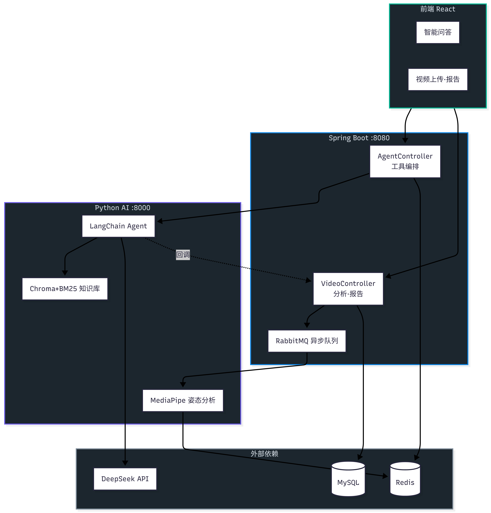
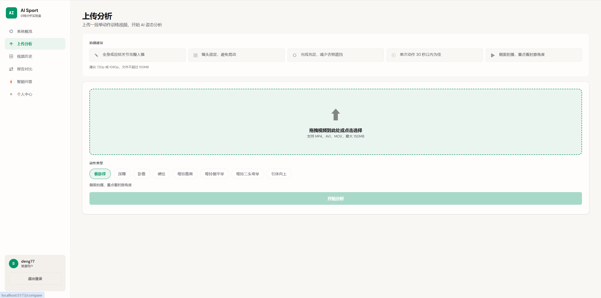
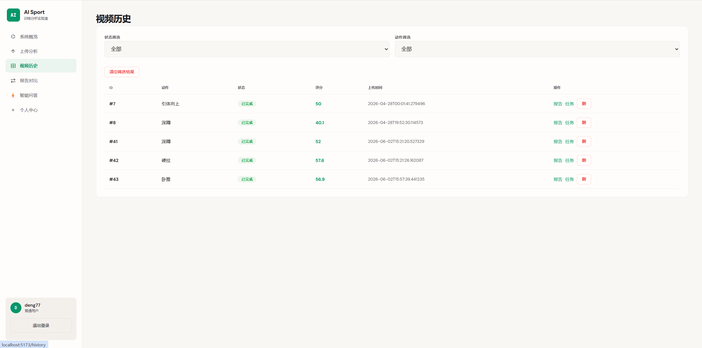
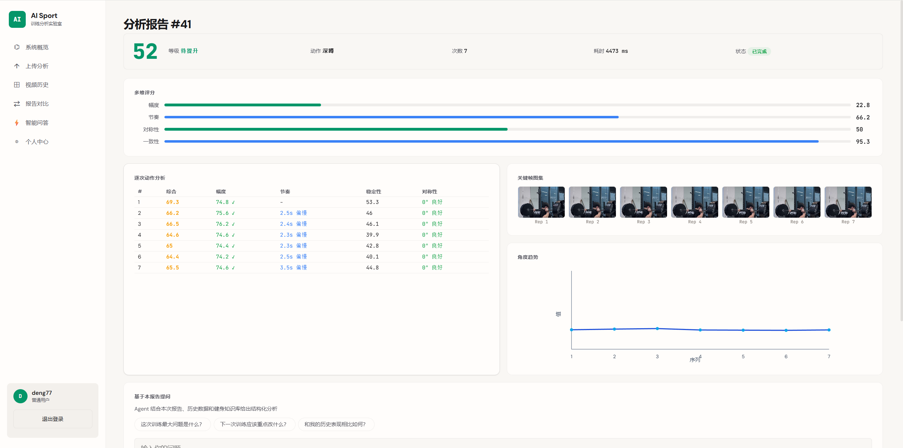
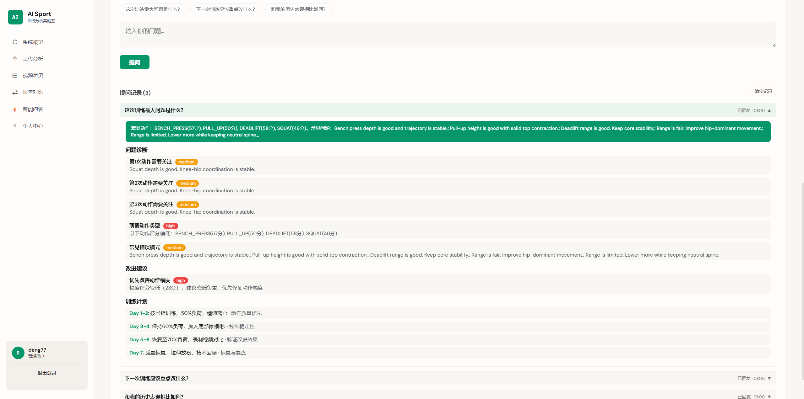
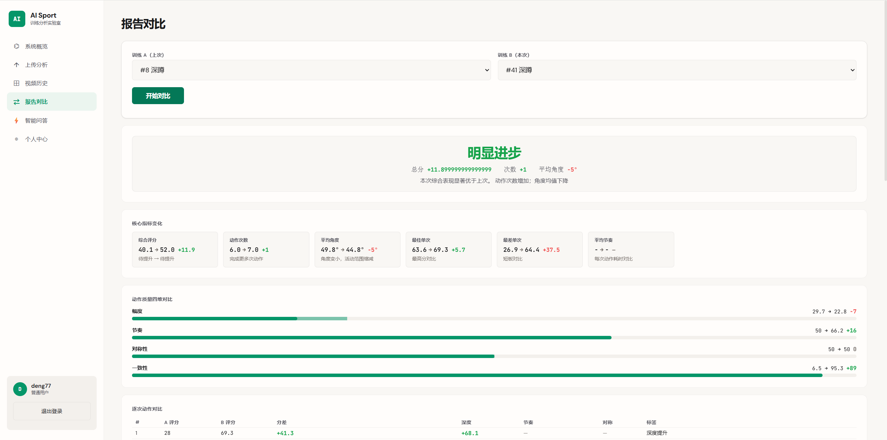
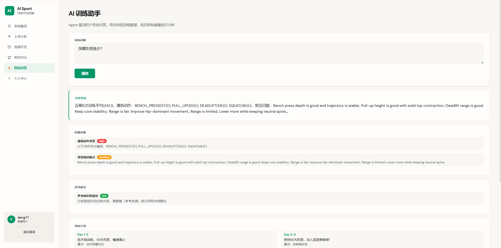
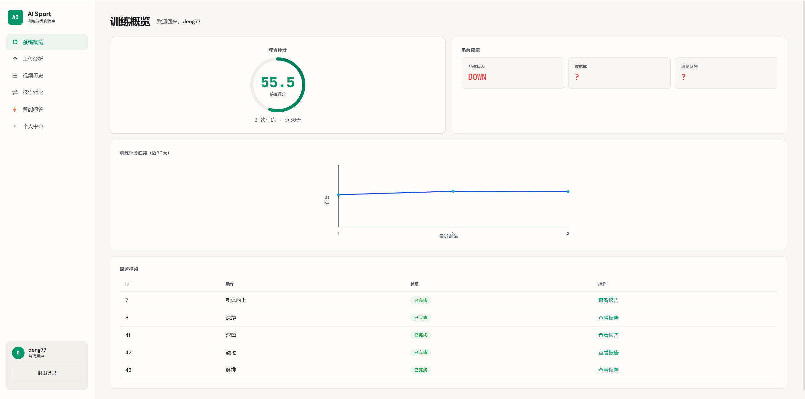

面向个人健身场景的 Agentic RAG 智能问答系统，围绕 Agent 工具编排、RAG 在线检索、Agent 高可用架构、效果测评与缓存加速完成全链路工程优化，为用户提供训练诊断、报告解读与个性化健身计划。
面向个人健身场景的 Agentic RAG 智能问答系统，围绕 Agent 工具编排、RAG 在线检索、Agent 高可用架构、效果测评与缓存加速完成全链路工程优化，为用户提供训练诊断、报告解读与个性化健身计划。
Python、LangChain、FastAPI、Chroma、BM25、RAGAS、DeepSeek API、Redis、Spring Boot
基于 LangChain 实现 Agent 编排层，定义知识搜索、分数趋势、训练历史、用户记忆、视频报告 5 个工具，Agent 自主完成工具规划、调用执行与结构化答案生成；通过回答 Schema 约束输出格式，前端按结构化字段渲染，实现诊断结论、建议与引用来源的清晰分离。
Python FastAPI 端实现核心 Agent 逻辑，Spring Boot 通过 PythonAgentClient 优先调用 Python Agent，异常或超时时自动回退至 Java 端 Agent；两端共享统一的工具接口契约与回答 Schema，切换对前端透明，保障服务可用性。
设计并优化 RAG 检索链路，涵盖 Chroma 稠密向量与 BM25 稀疏检索混合召回、Query Rewriting 查询改写、Rerank 交叉编码精排与引用核查机制；通过低置信度二次检索与问题路由提升召回效果和回答质量。
基于 RAGAS 框架、MRR、Hit Rate 搭建检索与生成联合评估流程，实现对切分策略、召回参数与重排模型的量化分析；Redis 分层缓存复用 QA 结构与向量索引，减少重复 LLM 与 Embedding API 调用。
设计基于文档 Hash 的增量索引与热更新机制，支持知识文档新增、修改、删除的快速同步；将 Agent 工具、检索器、Reranker、LLM 客户端等链路解耦为可插拔模块，便于效果对比与模型替换。







